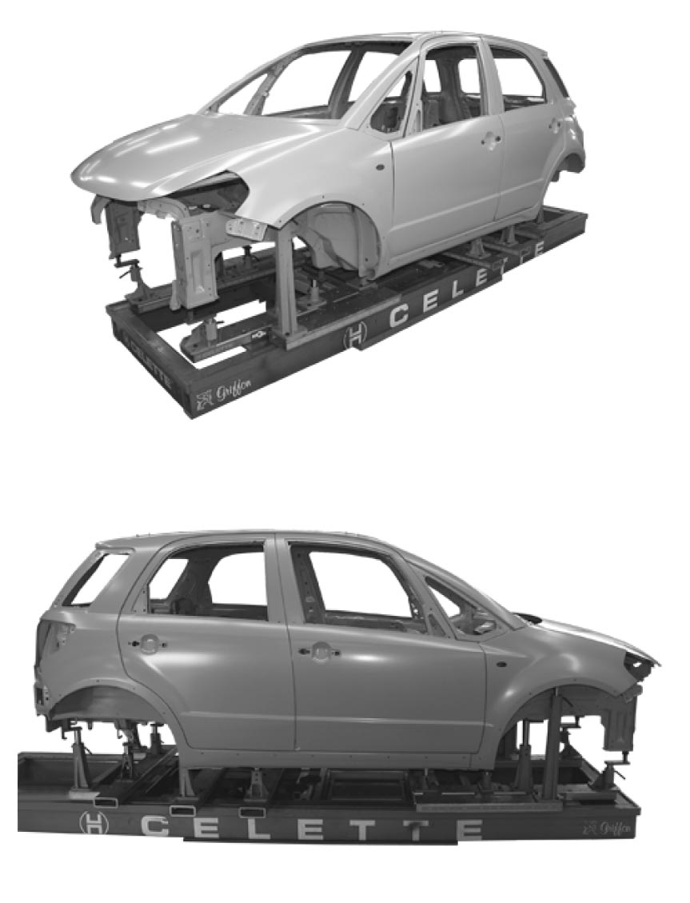

9K
| Checking and Straightening Benches Instruction |
General Notes

 "Expand image")
•Bench and jig systems are essential for accurate and efficient repairs of deformed body structures.
•On the bench and jig system, it will be easy to check chassis parts for dimensional accuracy, alignment, component location and secure exact welding of new body parts.
•Universal jig systems are also available in the market.
•Celette offers a special jig kit for this model. For further information on jig kit, check “Celette: www.celette.com”.
•Also the use of universal computerized body measuring system is recommended if you do not use the jig system.
•On the bench and jig system, it will be easy to check chassis parts for dimensional accuracy, alignment, component location and secure exact welding of new body parts.
•Universal jig systems are also available in the market.
•Celette offers a special jig kit for this model. For further information on jig kit, check “Celette: www.celette.com”.
•Also the use of universal computerized body measuring system is recommended if you do not use the jig system.
Use of Computerized Measuring Systems
•Reference points for measuring body frame and body structure can be found in the vehicle specific measurement data sheet from the measuring system manufacturers.
•Contact the system manufacturer for details on installations and operations.
•Always follow the operation manual of the measuring system manufacturer.
•Contact the system manufacturer for details on installations and operations.
•Always follow the operation manual of the measuring system manufacturer.
Application
The use of a computerized measuring system is recommended in the following cases.
•Removals of members, frames, struts and wheel housings are required before completing the frame deformation correction.
•Dents, creases, buckling or deformation exist on the vehicle floor panels or body frames.
•Dents, creases, buckling or deformation exist on the vehicle floor panels or body frames.